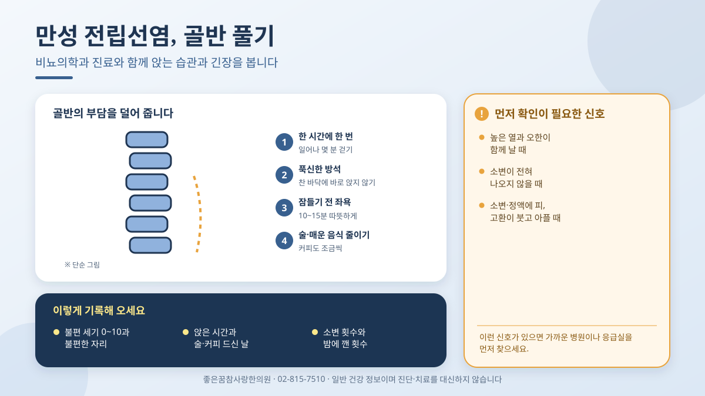

이종호 한의사 감수좋은꿈참사랑한의원 대표원장 (한의사 면허번호 19769)발행 2026-11-26 · 수정 2026-11-26
이 글의 차례
회의가 길어집니다. 의자에 앉은 지 두 시간째, 엉덩이 아래 회음부 쪽이 묵직하게 눌리는 느낌이 올라옵니다. 자세를 바꿔 보아도 소용이 없습니다. 화장실에 다녀와도 시원하지 않고, 아랫배와 사타구니가 은근히 당깁니다. 이런 날이 몇 달째 이어지고 있습니다.
진료실에서 이런 불편을 말씀하시는 분들은 대개 지쳐 계십니다. 비뇨의학과에서 검사를 받고 약도 먹어 봤는데, 좋아지는 듯하다가 다시 돌아오기를 반복했다고 하십니다. 어디에 말하기도 애매한 자리의 불편이라 혼자 오래 앓아 오신 경우가 많습니다.
만성 전립선염은 이름에 염증이 들어 있지만, 실제로는 세균 감염이 확인되지 않는 경우가 훨씬 많습니다. 그래서 요즘은 만성 골반통 증후군이라는 이름으로 함께 부르기도 합니다. 전립선만의 문제라기보다 골반 바닥의 근육, 신경, 긴장, 생활 습관이 함께 얽힌 불편으로 보는 것입니다.
이 글에서는 만성 전립선염이 어떤 불편인지, 왜 오래가는지, 비슷한 다른 문제와 어떻게 다른지, 그리고 비뇨의학과 진료와 함께 생활과 한의원에서 무엇을 살필 수 있는지 차례로 정리해 보겠습니다.
만성 전립선염은 어떤 불편인가요
전립선은 방광 바로 아래, 소변이 나가는 길을 감싸고 있는 작은 기관입니다. 이 주변과 골반 바닥에 불편이 석 달 넘게 이어지는 것을 흔히 만성 전립선염 또는 만성 골반통 증후군이라고 부릅니다.
불편의 모양은 사람마다 다양합니다. 회음부, 그러니까 음낭과 항문 사이가 묵직하거나 뻐근한 느낌, 아랫배와 사타구니가 당기는 느낌, 음경이나 고환 쪽이 시큰한 느낌, 허리 아래쪽이 뻐근한 느낌이 흔합니다. 오래 앉아 있으면 심해지고, 일어나 걸으면 조금 덜해지는 분이 많습니다.
소변 불편이 함께 오기도 합니다. 소변을 자주 보고, 보고 나서도 남은 느낌이 들고, 소변 줄기가 약하거나 끝에 찔끔거리기도 합니다. 사정할 때나 사정 뒤에 불편이 생기는 분도 있어, 성생활에 대한 걱정까지 겹치기 쉽습니다.
왜 오래가고 자꾸 재발할까요
만성 전립선염이 오래가는 이유는 한 가지가 아닙니다. 처음에 세균 감염이나 어떤 계기로 시작되었더라도, 시간이 지나면 골반 바닥 근육의 긴장과 신경의 예민함, 생활 습관이 불편을 이어 가는 고리가 되는 경우가 많습니다.
- 하루 대부분을 앉아서 지내 회음부가 오래 눌리는 경우
- 골반 바닥 근육이 늘 긴장해 굳어 있는 경우
- 일과 관계에서 오는 긴장과 걱정이 큰 경우
- 술, 매운 음식, 카페인을 자주 드시는 경우
- 잠이 부족하고 피로가 쌓인 경우
- 몸이 차가운 곳에 오래 노출되는 경우
이 가운데 골반 바닥 근육의 긴장은 놓치기 쉽습니다. 골반 아래에는 소변과 대변을 참고 내보내는 근육들이 해먹처럼 걸쳐 있는데, 긴장하거나 오래 앉아 있으면 이 근육이 늘 조여 있는 상태가 됩니다. 굳은 근육은 그 자체로 뻐근함과 당김을 만들고, 주변 신경을 예민하게 합니다.
마음의 긴장도 큰 몫을 합니다. 불편이 오래가면 '혹시 큰 병은 아닐까', '평생 이러면 어쩌나' 하는 걱정이 커지고, 그 걱정이 다시 몸을 조이게 만듭니다. 불편에 신경이 쏠릴수록 작은 느낌도 크게 다가오는 고리가 생기기 쉽습니다.
비슷한 다른 문제와는 어떻게 다른가요
갑자기 열이 나고 오한이 들며 소변 볼 때 심하게 아프고 회음부가 몹시 아프다면 급성 세균성 전립선염일 수 있습니다. 이때는 항생제 치료가 필요하므로 비뇨의학과 진료가 먼저입니다. 만성 전립선염은 이런 심한 열 없이 은근한 불편이 오래 이어지는 경우가 대부분입니다.
전립선 비대는 주로 나이가 드신 분에게서 소변 줄기가 약해지고 밤에 소변 때문에 자주 깨는 것이 중심입니다. 통증보다 소변 불편이 앞에 섭니다. 방광염은 소변 볼 때 따끔거리고 자주 마려우며 소변 검사에서 염증이 보이는 경우가 많습니다.
허리에서 내려오는 신경 문제나 고관절, 치핵, 사타구니 탈장도 회음부와 사타구니 불편을 만들 수 있습니다. 그래서 진료실에서는 소변 이야기와 함께 허리, 엉덩이, 대변, 사타구니의 불룩한 느낌을 함께 여쭙고, 필요하면 해당 진료과를 안내합니다.
한의학에서는 어떻게 보나요
한의학에서는 아랫배와 회음부가 묵직하고, 소변이 시원하지 않으며, 술과 기름진 음식 뒤에 심해지는 모습을 아래쪽에 습과 열이 머무는 상태로 봅니다. 소변 색이 짙고 입이 쓰며 몸이 무거운 분이 이쪽에 가깝습니다.
긴장하면 심해지고 한숨이 잦으며 옆구리와 아랫배가 당기는 분은 기운이 막혀 고르게 돌지 못하는 쪽으로 봅니다. 반대로 오래 앓아 몸이 지치고 허리와 무릎에 힘이 없으며, 아랫배가 차고 피곤하면 심해지는 분은 몸의 바탕이 약해진 쪽으로 봅니다.
같은 만성 전립선염이라도 이렇게 결이 달라서, 진료실에서는 불편의 자리와 함께 소변 색, 대변, 잠, 피로, 몸의 온도를 두루 여쭙고 지금 어느 쪽이 앞에 서 있는지를 찾습니다.
걱정이 불편을 키우는 고리는 어떻게 끊나요
불편이 몇 달씩 이어지면 하루 종일 그 자리에 신경이 쏠리게 됩니다. 앉을 때마다, 소변을 볼 때마다 '오늘은 어떤가' 하고 확인하게 되고, 조금만 묵직해도 마음이 내려앉습니다. 인터넷에서 비슷한 이야기를 찾아 읽다가 걱정이 더 커지기도 합니다.
이 고리를 끊는 첫걸음은 불편을 정확히 아는 것입니다. 비뇨의학과에서 필요한 검사를 받고 큰 문제가 없다는 것을 확인하면, 그것만으로도 몸의 긴장이 한결 풀리는 분이 많습니다. 그다음에는 불편에 쏠린 주의를 일상의 다른 곳으로 조금씩 옮기는 연습이 도움이 됩니다.
계절과 생활에 따라 달라지나요
추운 계절에 불편이 심해진다는 분이 많습니다. 찬 바닥이나 찬 의자에 오래 앉아 있거나, 겨울 낚시나 야외 작업처럼 아랫몸이 차가워지는 상황에서 골반 근육이 더 굳기 쉽습니다. 겨울에는 아랫배와 허리를 따뜻하게 감싸 주시고, 찬 곳에 바로 앉지 않도록 방석을 챙겨 주세요.
연말처럼 술자리가 몰리는 시기, 일이 바빠 잠이 줄어드는 시기에도 불편이 다시 올라오는 경우가 많습니다. 이런 시기를 미리 알아 두고 앞뒤로 쉬는 날을 챙기면 재발의 폭을 줄이는 데 도움이 됩니다.
먼저 이렇게 여쭙니다
처음 오시면 저는 대략 이런 순서로 여쭙니다. 미리 생각해 오시면 이야기가 수월해집니다.
- 불편이 시작된 것은 언제부터이고, 처음 계기가 있었나요?
- 불편한 자리는 회음부, 아랫배, 사타구니, 고환, 허리 가운데 어디인가요?
- 오래 앉아 있을 때, 술을 마신 뒤, 긴장했을 때 가운데 언제 심해지나요?
- 소변 횟수, 시원한 정도, 밤에 깨는 횟수는 어떠신가요?
- 비뇨의학과에서 받은 검사와 드신 약은 무엇인가요?
- 잠과 피로, 마음의 긴장은 요즘 어떠신가요?
불편이 처음 시작되던 무렵 생활에 어떤 변화가 있었는지도 함께 떠올려 봐 주세요. 일이 바뀌었거나, 오래 앉게 되었거나, 술자리가 늘었던 시기와 겹치는 경우가 많습니다.
정확하게 기억나지 않으셔도 괜찮습니다. 받으신 검사 결과지와 약 목록만 있어도 이야기의 절반은 시작된 셈입니다.
일상에서 먼저 해 볼 수 있는 것
만성 전립선염은 생활에서 골반의 부담을 덜고 몸의 긴장을 풀어 주는 것만으로도 불편이 한결 덜해지는 경우가 많습니다. 아래 가운데 지금 가장 쉬운 것 하나부터 골라 보세요.
- 한 시간에 한 번은 자리에서 일어나 몇 분 걷기
- 딱딱한 의자에는 가운데가 파인 방석이나 푹신한 방석 쓰기
- 잠들기 전 따뜻한 물로 좌욕하거나 아랫배를 데우기
- 술, 매운 음식, 커피와 에너지 음료 줄이기
- 물은 조금씩 자주 마시고 소변을 너무 오래 참지 않기
- 변비가 있다면 채소와 물, 걷기로 먼저 풀어 주기
따뜻한 좌욕은 골반 바닥 근육을 풀어 주는 데 도움이 됩니다. 미지근하거나 따뜻한 물에 10분에서 15분 정도 앉아 있다가 나오시면 됩니다. 너무 뜨거운 물은 피부를 자극할 수 있으니 손을 넣어 편안한 온도로 맞춰 주세요.
골반 바닥을 풀어 주는 숨쉬기도 해 보세요. 편하게 누워 무릎을 세우고, 숨을 들이쉴 때 배와 골반 아래가 부드럽게 내려가는 느낌, 내쉴 때 자연스럽게 돌아오는 느낌에 집중합니다. 조이는 운동보다 먼저 풀어 주는 연습이 필요한 분이 많습니다.
자전거를 자주 타신다면 당분간 줄이시거나, 안장을 회음부 압박이 적은 것으로 바꿔 주세요. 오래 운전하시는 분도 중간에 쉬어 가며 일어나 걷는 시간을 꼭 가지시길 권합니다.
사정을 일부러 오래 참거나 피할 필요는 없습니다. 오히려 규칙적인 성생활이 골반의 정체를 덜어 주는 데 도움이 된다는 분도 있습니다. 다만 사정 뒤 불편이 심하다면 그 내용을 기록해 진료 때 말씀해 주세요.
허벅지 안쪽과 엉덩이를 가볍게 늘여 주는 스트레칭도 해 보세요. 바닥에 앉아 발바닥을 마주 대고 무릎을 천천히 아래로 내리는 자세, 누워서 한쪽 무릎을 반대쪽 어깨 쪽으로 당기는 자세를 숨을 내쉬며 20초씩 해 주시면 골반 주변이 한결 부드러워지는 느낌을 받으실 수 있습니다. 아프지 않은 범위에서만 하세요.
한의원에서 함께 살필 수 있는 경우
- 비뇨의학과 치료 뒤에도 회음부와 아랫배의 뻐근함이 오래 이어지는 경우
- 오래 앉아 있으면 골반 아래가 묵직하고 허리와 엉덩이가 함께 굳는 경우
- 긴장하거나 피곤하면 불편이 심해지고 잠이 얕은 경우
- 술이나 기름진 음식 뒤에 소변이 시원하지 않고 아랫배가 무거운 경우
- 아랫배가 차고 쉽게 지치며 허리와 무릎에 힘이 없는 경우
좋은꿈참사랑한의원에 오시면 먼저 아래 '먼저 확인이 필요한' 신호가 없는지, 비뇨의학과 확인이 먼저 필요한 상태는 아닌지부터 봅니다. 그다음 맥을 짚고 소변과 대변, 잠, 피로, 아랫배 온도를 여쭤 몸이 어느 쪽으로 기울어 있는지 살핍니다.
진찰한 내용을 바탕으로 앉는 습관과 좌욕, 식사 가운데 먼저 바꿔 볼 것을 정하고, 침이나 한약 상담 가운데 지금 상태에 맞는 것을 함께 정합니다. 허리와 엉덩이, 허벅지 안쪽 근육이 굳어 있다면 그 자리를 함께 풀어 주는 진료를 하기도 합니다. 한약을 상의할 때는 드시는 약을 모두 확인하고 신중히 정합니다.
비뇨의학과 진료는 그대로 이어 가시고, 처방받은 항생제나 소변을 돕는 약은 상의 없이 멈추지 않습니다. 한의원 진료는 그 곁에서 골반의 긴장과 몸의 흐름, 잠과 피로를 함께 살피는 자리입니다.
이렇게 기록해 오시면 상담이 쉬워집니다
2주 정도만 간단히 적어 와 주세요. 불편이 어떤 하루와 엮여 있는지가 보이기 시작합니다.
- 불편의 세기를 0부터 10까지 숫자로, 하루 한 번
- 불편한 자리(회음부, 아랫배, 사타구니, 고환, 허리)
- 앉아 있던 시간, 운전이나 자전거를 탄 시간
- 술, 매운 음식, 커피를 드신 날
- 소변 횟수와 밤에 깬 횟수, 대변 상태
- 긴장했거나 잠이 부족했던 날
기록을 해 보면 불편이 오래 앉은 날, 술을 마신 다음 날, 일이 몰린 주에 몰려 있다는 것을 알게 되는 분이 많습니다. 그것만 보여도 무엇을 먼저 바꿀지가 분명해집니다.
오래된 불편과 천천히 멀어지기
만성 전립선염은 몇 주 만에 말끔히 사라지기보다, 좋은 날이 조금씩 늘고 불편한 날이 조금씩 줄어드는 방식으로 나아가는 경우가 많습니다. 그래서 하루하루의 느낌보다 몇 주 단위의 흐름을 함께 보자고 말씀드립니다.
이번 주에는 하나만 정해 보세요. 한 시간마다 일어나기, 잠들기 전 좌욕 10분, 술 마시는 날 하루 줄이기. 그 하나가 몸에 붙으면 다음 걸음을 함께 정하겠습니다. 다음에 오시면 기록을 펼쳐 놓고 몸이 어떻게 답했는지부터 살펴보겠습니다.
이런 증상은 먼저 확인이 필요합니다
- 높은 열과 오한이 나면서 소변 볼 때 심하게 아프고 회음부 통증이 갑자기 심해진 경우
- 소변이 전혀 나오지 않거나, 소변이나 정액에 피가 섞이고 고환이 갑자기 붓고 몹시 아픈 경우
이런 신호가 있으면 한의원보다 가까운 병원이나 응급실을 먼저 찾으세요.
함께 읽으면 좋은 글
- 전립선 비대가 있다는 말을 들었을 때, 비뇨의학과 치료와 함께 생활에서는 무엇을 살피나요?
- 소변이 너무 자주 마려운 빈뇨, 물·카페인·방광 습관·혈당은 어떻게 나눠 살피나요?
- 자다가 소변 때문에 깨면 잠과 어떤 관련이 있고, 무엇을 살펴보나요?
- 오래 앉아 공부하거나 일할 때 허리와 골반은 얼마 간격으로 쉬어 주나요?
- 40~50대 남성이 기운과 의욕이 떨어지고 잠·뱃살이 달라질 때(남성 갱년기)는 무엇을 살피나요?

여쭙는 것
- 불편이 시작된 것은 언제부터이고, 처음 계기가 있었나요?
- 불편한 자리는 회음부, 아랫배, 사타구니, 고환, 허리 가운데 어디인가요?
- 오래 앉아 있을 때, 술을 마신 뒤, 긴장했을 때 가운데 언제 심해지나요?
생활에서 해 볼 것
- 한 시간에 한 번은 자리에서 일어나 몇 분 걷기
- 딱딱한 의자에는 가운데가 파인 방석이나 푹신한 방석 쓰기
- 잠들기 전 따뜻한 물로 좌욕하거나 아랫배를 데우기
한의원에서 함께 살필 것
- 비뇨의학과 치료 뒤에도 회음부와 아랫배의 뻐근함이 오래 이어지는 경우
- 오래 앉아 있으면 골반 아래가 묵직하고 허리와 엉덩이가 함께 굳는 경우
- 긴장하거나 피곤하면 불편이 심해지고 잠이 얕은 경우
먼저 확인이 필요한 신호
- 높은 열과 오한이 나면서 소변 볼 때 심하게 아프고 회음부 통증이 갑자기 심해진 경우
- 소변이 전혀 나오지 않거나, 소변이나 정액에 피가 섞이고 고환이 갑자기 붓고 몹시…
한눈에 보는 표
| 구분 | 핵심 |
|---|---|
| 여쭙는 것 | 불편이 시작된 것은 언제부터이고, 처음 계기가 있었나요? 불편한 자리는 회음부, 아랫배, 사타구니, 고환, 허리 가운데 어디인가요? |
| 생활에서 해 볼 것 | 한 시간에 한 번은 자리에서 일어나 몇 분 걷기 딱딱한 의자에는 가운데가 파인 방석이나 푹신한 방석 쓰기 |
| 한의원에서 함께 살필 것 | 비뇨의학과 치료 뒤에도 회음부와 아랫배의 뻐근함이 오래 이어지는 경우 오래 앉아 있으면 골반 아래가 묵직하고 허리와 엉덩이가 함께 굳는 경우 |
| 먼저 확인이 필요한 신호 | 높은 열과 오한이 나면서 소변 볼 때 심하게 아프고 회음부 통증이 갑자기 심해진 경우 소변이 전혀 나오지 않거나, 소변이나 정액에 피가 섞이고 고환이 갑자기 붓고 몹시 아픈 경우 |
자주 묻는 질문
만성 전립선염은 세균 때문에 생기는 건가요?
세균 감염이 확인되는 경우도 있지만, 만성의 경우에는 세균이 확인되지 않는 경우가 훨씬 많습니다. 골반 바닥 근육의 긴장, 신경의 예민함, 생활 습관이 함께 얽혀 있는 경우가 많습니다.
만성 전립선염이 있으면 전립선암이 잘 생기나요?
만성 전립선염이 있다고 해서 암으로 이어진다고 보지는 않습니다. 다만 나이에 맞는 검진은 비뇨의학과에서 따로 챙기시는 것이 좋습니다.
좌욕은 얼마나 자주 하면 되나요?
하루 한 번, 잠들기 전에 10분에서 15분 정도면 충분합니다. 너무 뜨거운 물은 피하고 손을 넣어 편안한 온도로 맞춰 주세요.
비뇨의학과 약을 먹고 있는데 한의원 진료를 함께 받아도 되나요?
드시는 약을 알려 주시면 그에 맞춰 진료 방향을 정합니다. 처방받은 약은 비뇨의학과 선생님과 상의 없이 멈추지 않으시고, 한약을 상의할 때는 드시는 약을 모두 확인합니다.
좋은꿈참사랑한의원은 재진 때 지난번 이야기부터 이어서 여쭙니다. 진료시간과 예약은 오시는 길에서 확인하세요.
어디서 상담받을 수 있나요?
좋은꿈참사랑한의원은 서울 동작구 만양로2길 2 신성빌딩 3층·5층(서울 동작구 상도동, 7호선 상도역 3번 출구 근처)에 있습니다. 한의사 3명(이종호 대표원장, 조영기 수석진료원장, 정원영 진료원장)이 진료합니다. 진료시간은 평일 09:30~20:00(점심 13:00~14:00), 토·일·공휴일 09:30~15:00이며, 방문 전 전화로 확인을 권합니다. 예약은 네이버 예약, 카카오톡 상담, 전화 02-815-7510로 받습니다.
이 글은 일반적인 건강 정보이며 개인의 진단이나 치료를 대신하지 않습니다. 증상이 있거나 복용 중인 약이 있다면 진료를 통해 확인하세요. 치료 효과는 개인마다 다를 수 있습니다.
작성 기준: 일반적으로 알려져 있는 건강 정보를 참고해 정리했습니다(대표원장 감수). 증상 기록은 1~2주 동안 하루 1회, 비슷한 시간에 적어 오시면 지난 상태와 비교하기 쉽습니다.